アビス Abyss
概要
アビスはTSM→TSS→TST→TSDと狙う技です．地形が高く，複雑になっています．状況に合わせてまとめて打つかどうか判断する必要があります．
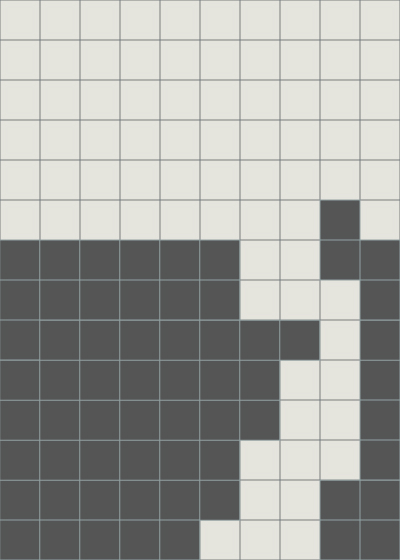 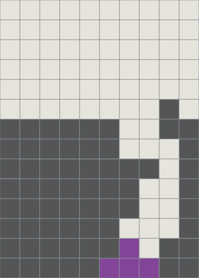 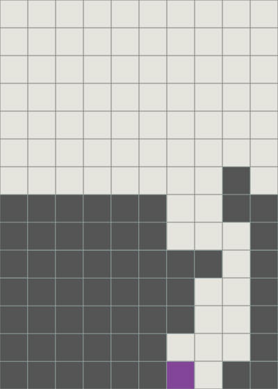
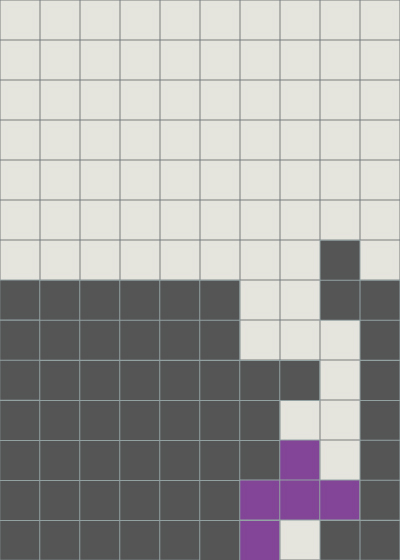 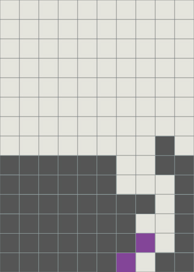 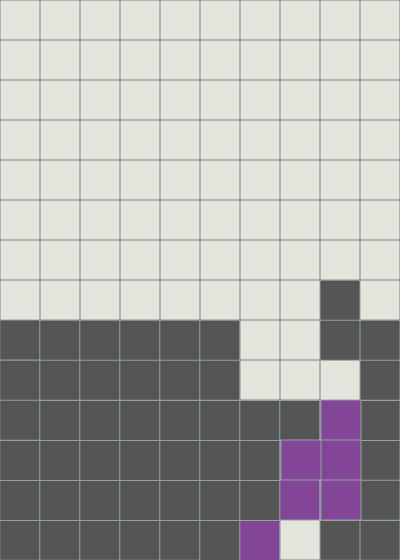
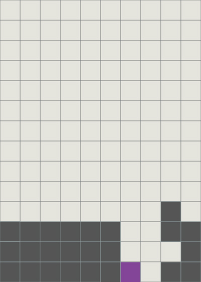 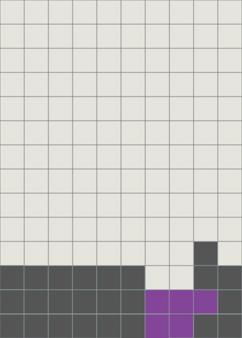 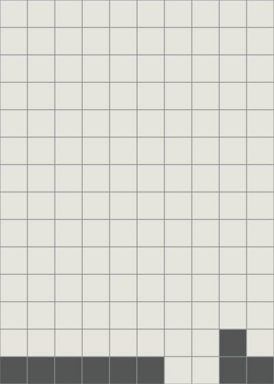
注意
屋根の位置が逆になるとTSTが打てなくなります．
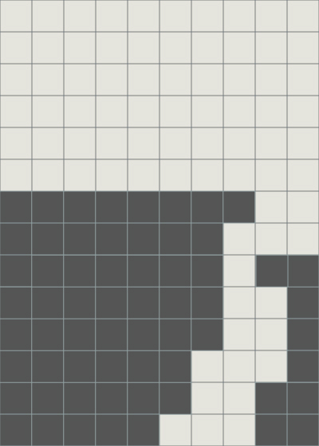 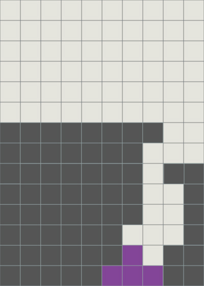 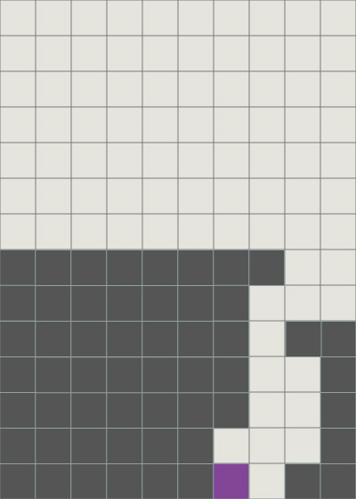 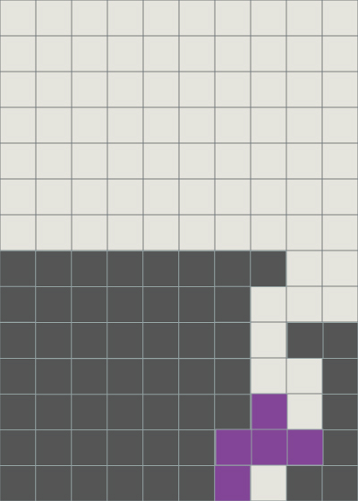 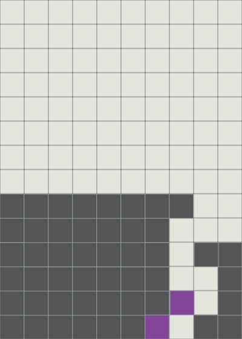
対処
その場合，ライン消去を行ってしまった場合はSZの回転入れで解消できます．
行っていなければTSM後，トリニティに移行することで綺麗に対応できます．
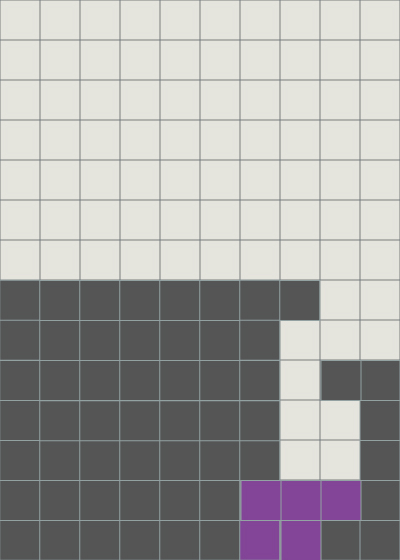
補足
アビスを狙える地形ではトリニティを打つことができます．
逆は必ずしもできるとは限りません．
途中
アビスの地形は複雑で，直感的に理解することが難しいです．ミノの組み合わせで考えてもよいかもしれません．
TSMの地形から移行することが可能です．TSMは先に打っても構いません．
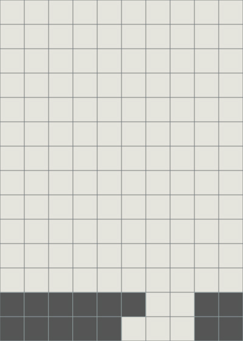 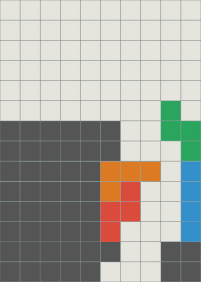
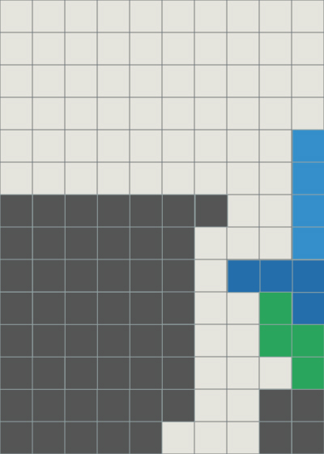
上図のようにTSTの部分が左右逆になっても同様にすることができます．
T-Spinごとに色付けを行うとその違いがわかります．